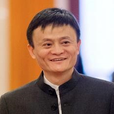

Famous People in Technology World
 Bill Gates
Bill Gates
William Henry Gates was born on 28 October 1955, in Seattle, Washington. As the principal founder of Microsoft, Bill Gates is one of the most influential and richest people on the planet. Recent estimates of his wealth put it at US$84.2 billion (Jan. 2017); this is the equivalent of the combined GDP of several African economies. In recent years he has retired from working full time at Microsoft, and has instead concentrated on working with his charitable foundation “The Bill and Melinda Gates Foundation.”
Linus Torvalds
Linus Torvalds is the world's most famous computer programmer and also its most famous Finn. He is the founder and coordinator of Linux, the Unix-like operating system that is beginning to revolutionize the computer industry and possibly much else as well. His is truly one of the great tales in the history of the computers.
 Mark Zuckerberg
Mark Zuckerberg
Born on May 14, 1984, in White Plains, New York, Mark Zuckerberg co-founded the social-networking website Facebook out of his college dorm room. He left Harvard after his sophomore year to concentrate on the site, the user base of which has grown to more than 250 million people, making Zuckerberg a billionaire.
Tim Berners-Lee
Tim Berners-Lee is a British computer scientist credited with inventing the World Wide Web (WWW). Berners-Lee enabled a system to be able to view web pages (hypertext documents) through the internet. He also serves as a director for the World Wide Web Consortium (W3C) which oversees standards for the Internet and World Wide Web. Berners-Lee is also concerned about issues relating to freedom of information and censorship on the internet.

Jack Ma
The founder and CEO of Alibaba, one of the world’s leading e-commerce web portals, is one of the world’s richest men, but he has not let success cloud his vision for the future or his acknowledgement of where he came from. Jack Ma’s keys to success are true and inspiring for everyone from aspiring billionaires to owners of the smallest businesses.
Jack Dorsey
Born in St. Louis, Missouri, on November 19, 1976, Jack Dorsey became involved in web development as a college student, founding the Twitter social networking site in 2006. Since that time, Dorsey has served as CEO, chairman of the board, and executive chairman of Twitter. He also launched the successful online payment platform Square in 2010.
 Jeff Bezos
Jeff Bezos
Entrepreneur and e-commerce pioneer Jeff Bezos was born on January 12, 1964, in Albuquerque, New Mexico. Bezos had an early love of computers and studied computer science and electrical engineering at Princeton University. After graduation he worked on Wall Street, and in 1990 he became the youngest senior vice president at the investment firm D.E. Shaw. Four years later, he quit his lucrative job to open Amazon.com, a virtual bookstore that became one of the internet's biggest success stories. In 2013, Bezos purchased The Washington Post in a $250 million deal.